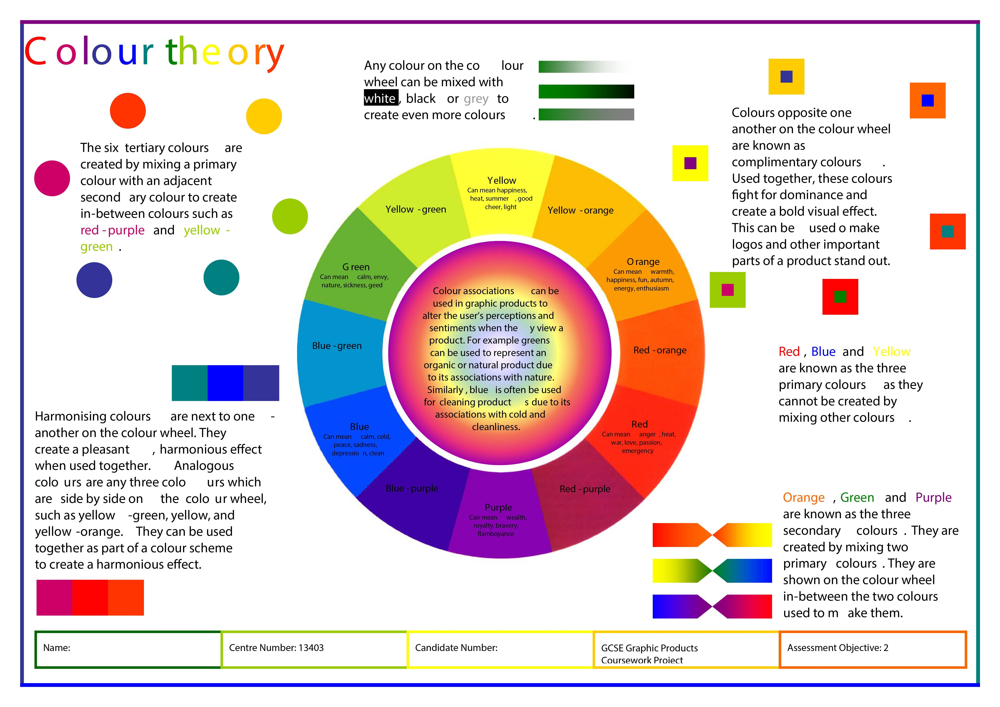

This website was made for the purpose of both showing off my skills, and showing my resume that has more information. This website is so that when I show my resume you also get a little peak into what I am able to do
The reason that I chose the color blue is because the color symbolizes saftey and tranquility, this seemed to fit this website because while the website itself is for professional resons, it also is a reminder that stressing to much can be a really bad thing, and brings a calmer mindset.
